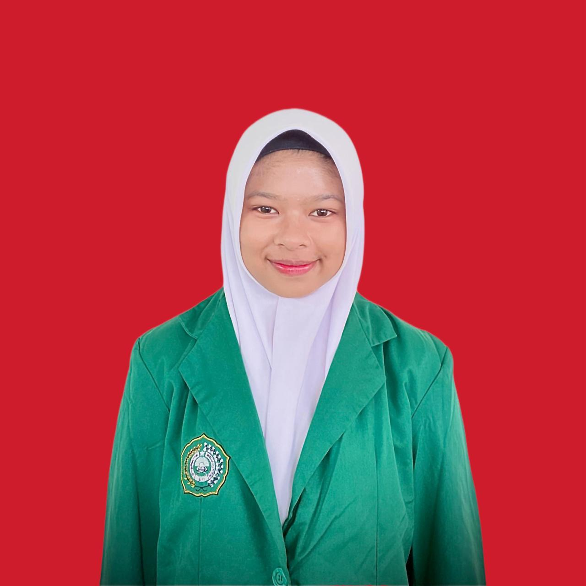

SMK Muhammadiyah 1 Kalasan adalah sekolah kejuruan unggulan di bidang pelayaran dan seni yang berlokasi di Kalasan, Sleman, Yogyakarta. Sekolah ini berkomitmen membentuk lulusan yang profesional, disiplin, dan siap kerja.

Selamat datang di SMK Muhammadiyah 1 Kalasan. Kami berkomitmen memberikan pendidikan terbaik dan membentuk karakter siswa yang unggul dan berakhlak mulia.
Program ini mendidik siswa menjadi pelaut profesional, menguasai navigasi, keselamatan pelayaran, dan manajemen kapal.
Fokus pada permesinan kapal, sistem kelistrikan, serta perawatan mesin kapal modern.
Mengembangkan bakat seni dan kreativitas siswa dalam bidang musik dan industri kreatif.
Siswa
Guru
Lulusan Terserap Kerja

Guru Nautika

Guru Seni Musik

Guru Teknika
“Saya bangga menjadi alumni SMK Muhammadiyah 1 Kalasan, sekarang saya bekerja di perusahaan pelayaran internasional.”
6FRF+J4P, Ngajeg, Tirtomartani, Kec. Kalasan, Kabupaten Sleman, Daerah Istimewa Yogyakarta 55571